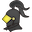

This is a brief tutorial to guide you through the application. You can skip it by clicking on the green button below. If you wish to check it out later go to settings.
Questo is about answering questions related to specific geographic locations, about learning new amazing facts, about competing with your friends. Questo is about having fun.
Whenever you see this sign you can start a quest. A quest is a simple quiz containing up to 10 questions related to a location. After each question you will get feedback about your answer and will have the chance to report problems. At the end your correct answers will be counted. See if you've won a trophy by going the the trophy room or your own profile .
In the tournament mode you can choose some specific locations and challenge your friends with quizzes from the places you selected. Your friends can also challenge you to tournaments, so watch out for any new notifications on the main screen.
These are your friends. You can challenge them or see how they are doing in quest by comparing to their profile. Don't know anyone playing Questo yet! Don't worry, simply hit the + button in the top of the Companion Screen and invite your friends to join Questo!
Wow, You actually read the whole thing. Bravo!
If you have any
questions feel free to send us an email at support@questo.com.
You are now ready to start playing Questo!
Godspeed, sire